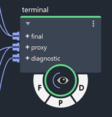
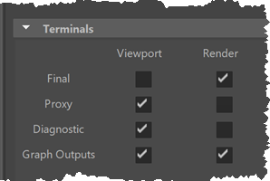

终端可替代用于创建可渲染几何体的输出节点。它们可用于嵌套复合，而不仅仅是图表的顶层。
终端有多种输出类型：“最终”(Final)（表示最终可渲染结果）、“代理”(Proxy)（表示快速视口表示）和“诊断”(Diagnostic)（表示诊断结果查看）。默认情况下，最终渲染中仅包含“最终”(Final)，但可以单独打开和关闭每种类型。在具有嵌套终端的复合上有一些标志，可让您在图表的任意级别上切换输出。
将 terminal 节点添加到图表中。
将一个或多个可渲染几何体连接到其任何或所有输入：
final 用于最终脱机渲染。通常，这是对象的最高分辨率版本。默认情况下，这些对象不会显示在视口中。proxy 用于视口显示。通常，这是您为了提供最终结果的有用预览而创建的低分辨率几何体，同时仍允许在编辑场景时进行快速交互。默认情况下，这些设置不包含在脱机渲染中。diagnostic 用于可能已针对特定用途创建的特殊几何体，例如，用于将特性值可视化为颜色。默认情况下，这些设置会显示在视口中，但不会包含在脱机渲染中。
根据是否正在解算 final 子图，使用 final_mode_switch 返回不同的值。例如，与在视口中显示代理或诊断结果时相比，渲染时可以发射更多粒子。
您也可以使用 final_mode 创建自己的条件复合，当解算 final 子图时，它将返回 true。
以下两项控制哪些 Bifrost 几何体显示在场景中：
F、P 和 D 标志显示在终端节点以及在任意嵌套深度包含终端节点的复合下方的半圆中。单击标志以将 final、proxy 和 diagnostic 几何体的解算切换为禁用（深灰色）或启用（白色）。
更改父复合上的标志不会更改内部终端节点上的标志。而父标志的作用类似于内部终端节点的过滤器。例如，假设复合包含两个终端节点，一个节点启用诊断输出，另一个禁用诊断输出。
Maya 中 bifrostGraphShape 节点的属性确定图表中的哪些可用几何体将显示在视口和脱机渲染中。Maya 的“属性编辑器”(Attribute Editor)中的 bifrostGraphShape 的“终端”(Terminals)组中提供这些属性。

“视口”(Viewport)列中的复选框控制是否在 Maya 的视口中显示相应的几何体，“渲染”(Render)列中的复选框控制是否在脱机渲染器（如 Arnold）的图像中显示相应的几何体。
output 节点的几何体，而不是连接到终端节点的几何体。这包括输出节点上的 Object 和 array<Object> 端口。 在 2022 之前的 Maya 版本中，除非在 Maya 的“动画”(Animation)首选项中选择“DG 解算模式”(DG Evaluation mode)，否则可能会解算渲染子图（但不会显示在视口中）。